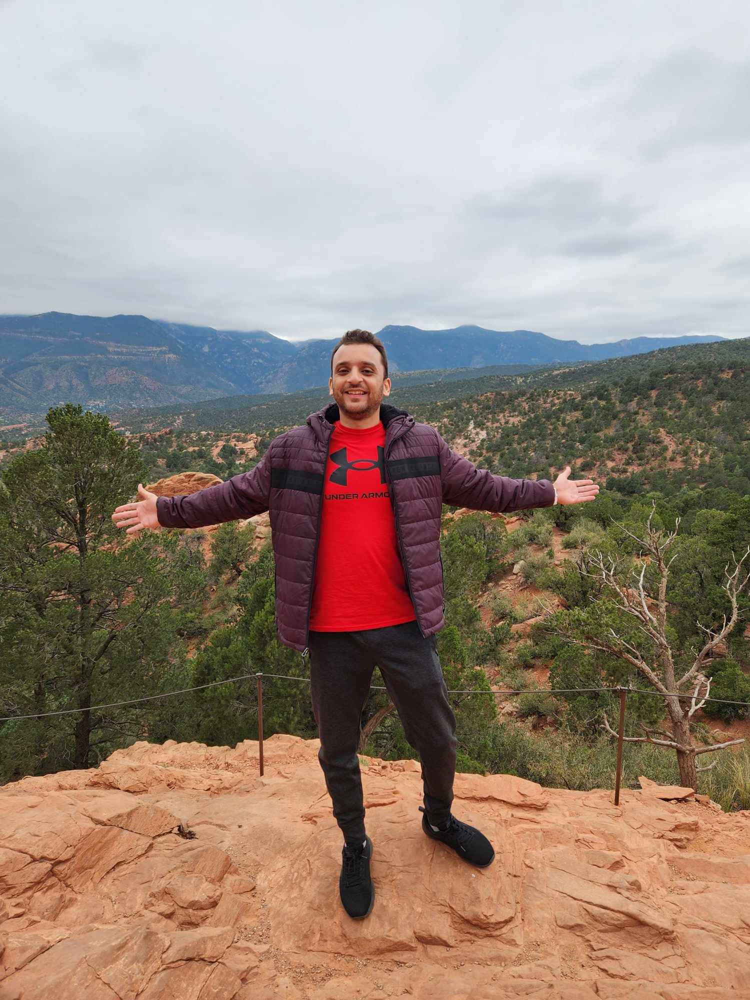

Software Engineer
Greetings and welcome to my website!
I'm Amr Ramadan, a passionate and results-driven software engineer with a strong background in Full-stack development, I thrive on solving complex problems and creating efficient, user-friendly solutions. My journey in software engineering has led me to explore cutting-edge technologies like Python, C++,HTML/CSS, JavaScript, SQL, Linux, Dynatrace and Splunk , and I'm always eager to expand my skills further. I believe in the power of technology to transform ideas into reality, and I'm committed to making a meaningful impact in the ever-evolving world of software development.
I'm currently pursuing a Master's degree in Computer Science at Texas State University in which I will be graduating in Fall 2023 Yay!; I'm also interning with Netspend as an Application Performance Monitoring Engineer since May 2023, I have dealt with different tool kits and technologies to maintain deployed code and applications.
Feel free to explore my projects to gain insights into my technical capabilities and approach to problem-solving.
Download my resume to learn more about my work experience and skills.
>Feel free to reach out to me: